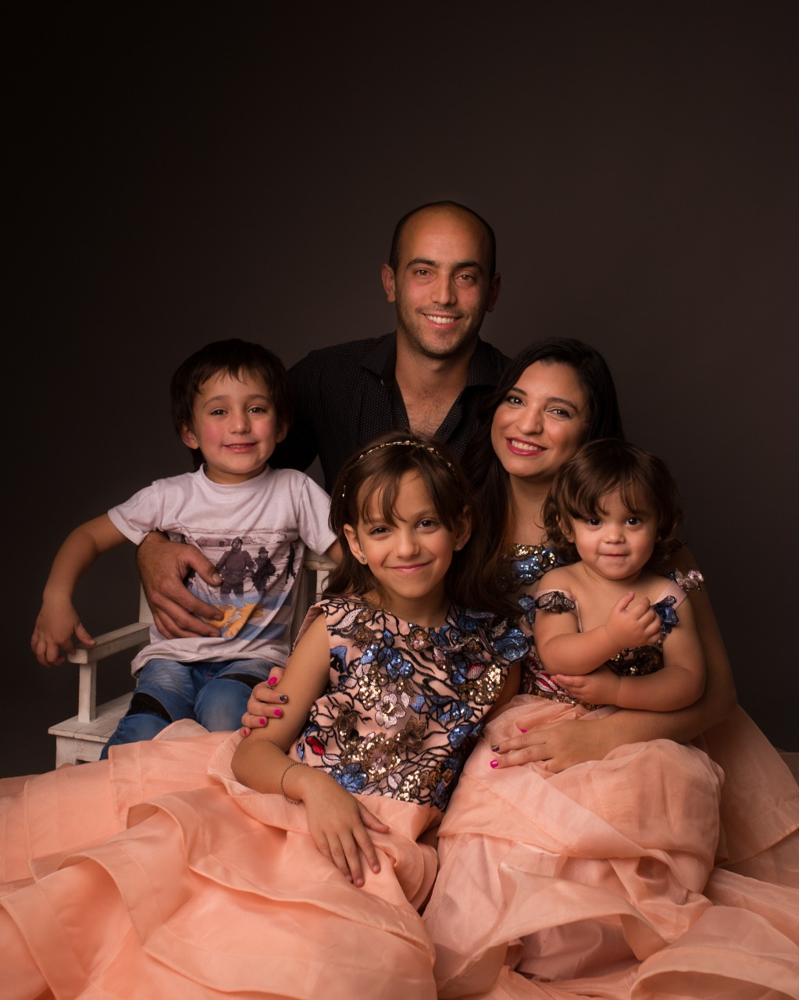
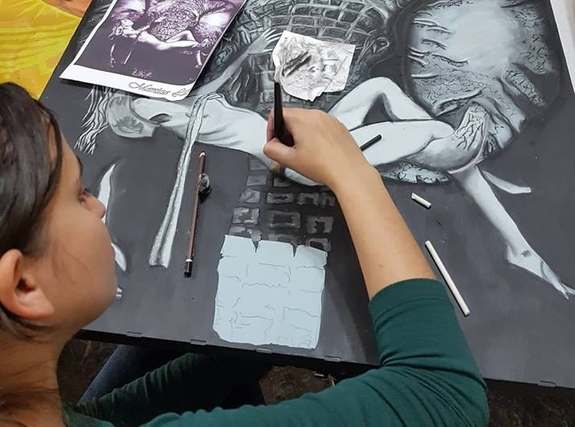
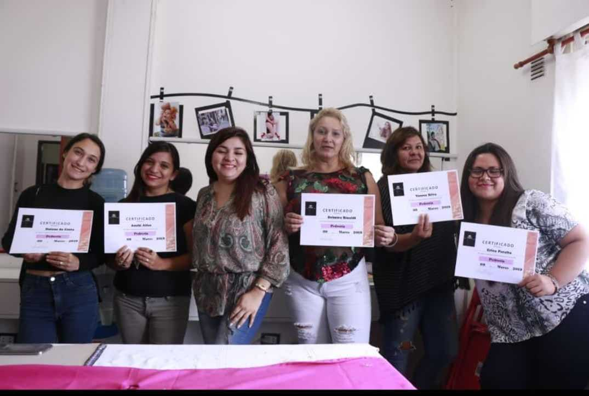
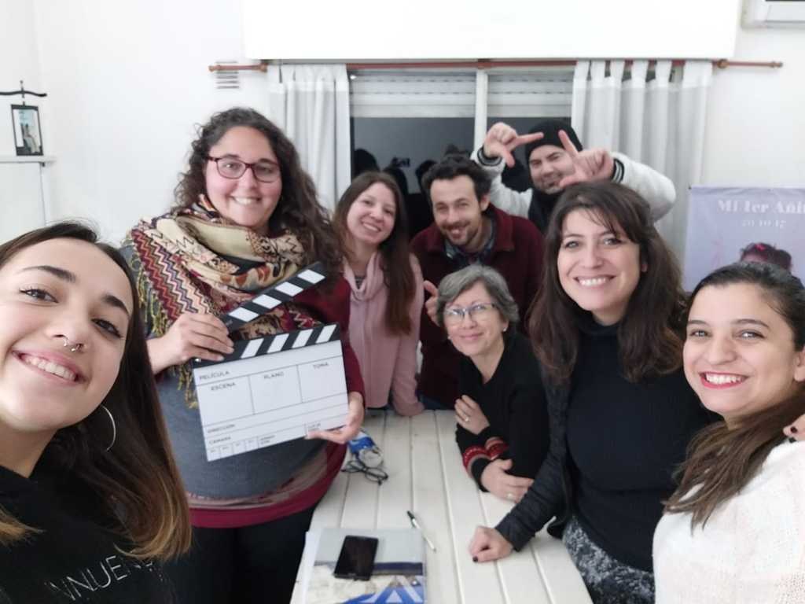

Soy fotografa hace 5 años. Soy Argentina y con la curiosidad a flor de piel, donde haya una capacitación o algo para aprender
ahí voy a estar seguro!! Amo ver a las personas que amo haciendo realidad sus sueños, explotando sus talentos, aunque debo
admitir que soy mucho de "Haz lo que yo digo pero no lo que yo hago".

Empecé en este rubro en Octubre del 2017 aproximadamente,por curiosidad y fue un camino de ida! Al año siguiente después
de tener, a mi tercer peque,me fui de viaje por primera vez sola. Descubrí y re aprendí que a pesar de ser madre era una
persona que necesitaba sus descansos de vez en cuando; así que cuando puedo viajar... AMO y me voy sin ningún
remordimiento (bueno, un poquito si). Debido a mi curiosidad hice cursos de todo! Si si, de tooooodo!

Estudié dibujo y pintura
Hice un taller de pedrería
Presencialmente lo último que hice fue un curso de cine.
Pero la rama fotografica que consiguio enamorarme fue la fotografia infantil,de familias y de maternidad.
Actualmente sigo capacitandome porque creo que es una herramienta fundamental para hacer lo que amamos con todos
los conocimientos que ustedes se merecen.
A pesar de la pandemia, continuo encontrando la manera de capacitarmeIntento 1 vez al año estudiar sobre iluminación para refrescar los conocimientos.Con la pandemia, tuvimos que cerrar el estudio. Así que me capacité en retratos en la ciudad con
una genia!